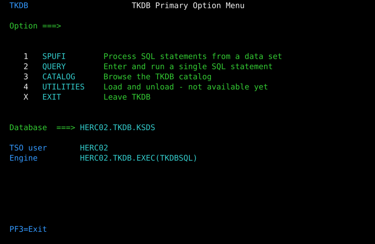
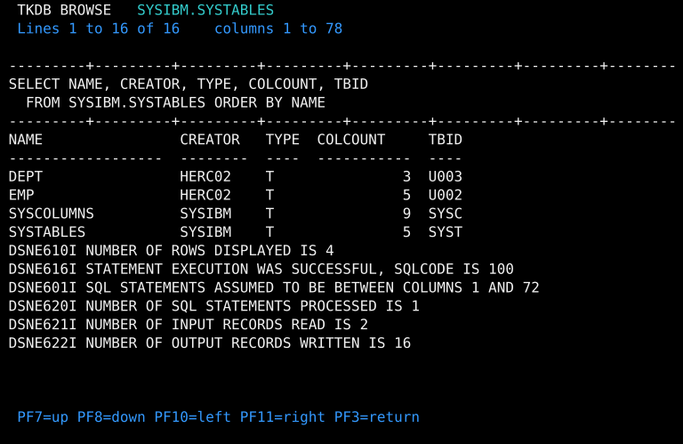
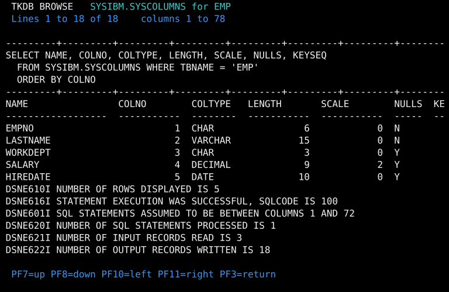
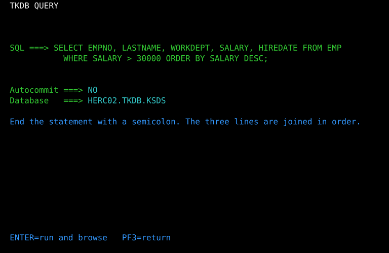
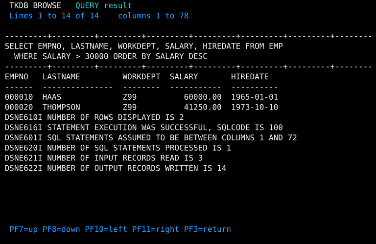
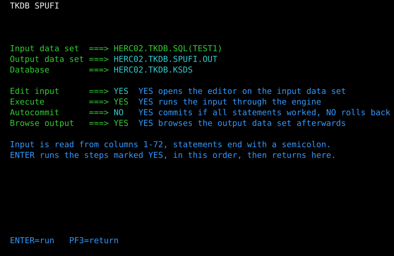
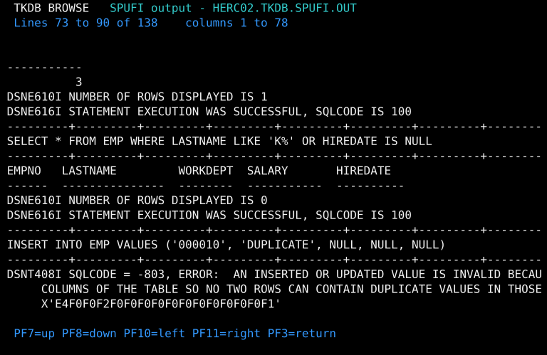
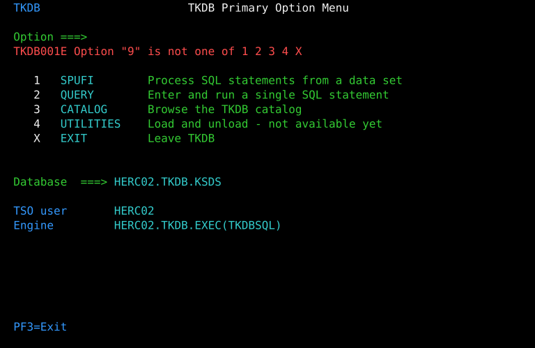

MVS 3.8j is IBM's last mainframe operating system placed in the public
domain, frozen in 1981. IBM announced DB2 two years later. In the forty-five
years since, nobody has written a relational database for this specific,
free, still-runnable release of MVS — until now. TKDB is SQL, a
self-describing system catalog, transactions, row locks, DB2's own
SQLCODEs and message text verbatim, a SPUFI-style batch path
and a DB2I-style full-screen front end, in 2,051 lines of REXX over a VSAM
file. It ships pre-installed in the panelwright/tk5plus test
image, and every screenshot on this page is a live capture — nothing here
is mocked or hand-drawn.
This page has two halves. The first is a tour of TKDB as it stands: what it does, and what it looks like on a real 3270 screen. The second is a story about being wrong in public — a design decision this project recorded as rejected, in writing, with thirty jobs of evidence behind it, that turned out six days later to be reversible, and is now a second working database engine shipping on the same image.
| Real SQL | CREATE/DROP TABLE, multi-row
INSERT, UPDATE, DELETE,
SELECT with WHERE, ORDER BY,
COUNT(*), FETCH FIRST n ROWS ONLY,
LIKE, IS NULL, AND/OR/NOT. |
|---|---|
| A self-describing catalog | SYSIBM.SYSTABLES and
SYSIBM.SYSCOLUMNS are ordinary queryable tables that describe
themselves — and refuse a write with DB2's own -607. |
| Transactions | COMMIT and ROLLBACK,
with SPUFI's own end-of-input rule: AUTOCOMMIT(YES) commits
only if every statement in the run succeeded. |
| Row locking | A changed row is held until its owner commits;
a second thread updating it waits, then gets DB2's own
-911 or -913 on a lock timeout. |
| DB2's diagnostics, verbatim | DSNT408I SQLCODE = -803
with the duplicate key in hex, DSNE610I NUMBER OF ROWS DISPLAYED IS
2 — not an invented message vocabulary, the real one, so anyone who
has ever used DB2 already knows how to read a TKDB error. |
| Three front doors | A batch command, a full-screen DB2I-style application, and a resident server other address spaces talk to concurrently. |
TKDB opens from TSO READY as a DB2I-style primary option menu — the classic IBM database-administrator screen shape, reproduced on an operating system DB2 itself never ran on.

Option 3 browses the catalog. Enter with the table name left blank and
every table lists; the two SYSIBM rows are the catalog
describing itself, which is the first thing anyone points a SQL client at
a database expects to be able to do.


Option 2 runs one statement typed across three 68-character lines, joined in order, with the result in a scrollable grid:


Option 1 is SPUFI — "SQL Processor Using File Input" — DB2's own batch loop: name an input data set of SQL and an output data set for the report, then edit → execute → browse as one cycle. Each step is a YES/NO, and the panel comes back filled in, so a revision runs again without retyping anything, exactly as real SPUFI does.


Reports are 132 columns wide on an 80-column screen, so the browser scrolls and shifts sideways. Errors land on the panel's own message line, in red — and honestly, as an error, not silently swallowed:

No panel executes SQL. Every one of them writes a work member, calls the engine, and browses the report the engine wrote — so the interactive screens and the batch command can never disagree about what a statement does. That single-call-site rule is what made everything in the next section possible without touching six other places at once.
Every application added to the TK5 test image earns its place by painting a screen shape the stock system never does. A DB2-like application is unusually rich that way — which is why, when the idea was first floated, the obvious question was whether TKDB could be something better than a REXX imitation of a database: the real SQLite, actually compiled for MVS 3.8j. Real joins, real indexes, a real query planner, for the cost of a build.
Thirty live jobs answered the question. TK5 does ship a real C compiler
(GCCMVS), and it compiles real SQLite source — up to 21,637 lines of it,
clean. But the full amalgamation is 270,126 lines in one file, and MVS
3.8j's address space is 24-bit: the compile abended S878
— out of virtual storage — at 7,764K, even with the region set to take
everything available. A 40,039-line probe died differently, inside the
compiler itself. Splitting the file into smaller pieces looked like the
fix, except the compiler truncates every external name to eight
uppercase characters, which collapses every sqlite3_*
function to the same eight letters. And S/370 doesn't even store
floating point the way SQLite's file format assumes. Four separate walls,
each real. The verdict went into the design record in writing: path
B is rejected; path A is the plan. "Path A" — TKDB as it exists
today — is 2,051 lines of hand-written REXX over a VSAM file, and it shipped
five days later.
That was the right call with the evidence available, and REXX genuinely works — it's what every screenshot above is running. But five days after TKDB shipped, the question came back, framed differently: what if the compile itself didn't have to happen on the mainframe at all?
A cross-compiler moves the compile step to an ordinary Linux machine and leaves only assembly and linking for MVS 3.8j to do. Under an hour, no mainframe involved: the entire 270,126-line amalgamation compiled as one unit, no splitting needed. Every one of D3's four grounds was re-checked against that result, and three of them turned out to describe the wrong thing. The address-space wall wasn't SQLite's — it was the compiler's own footprint, and moving the compile off-host made it vanish. The symbol-truncation problem was moot, because a single compiled unit needs no splitting and exposes only 23 external names, none colliding. And the size ceiling that killed the 40,039-line probe wasn't a ceiling at all — it was one specific compiler bug, and it had a name: every 64-bit addition crashed the code generator, in every form tried. The pattern responsible, and its subtraction counterpart, sat in the compiler's own source file — with the subtraction version already disabled by a comment left by whoever wrote it, decades ago. One deleted table entry, and the compiler could synthesize the add from smaller pieces instead of crashing on it.
A compile is not a program. The assembler still had to swallow a quarter of a million lines of generated S/370 assembly, and it refused — not for lack of memory this time, but because Assembler XF ran out of room for its own symbol table, 25,356 entries in. The obvious fix, trimming features to cut the symbol count, was tried across seven jobs and cut the count by nearly a third. It changed nothing. The measurement that mattered was subtler: two builds with wildly different symbol counts both passed, and two others with similar counts didn't — which meant symbols were the wrong thing to be counting. The real limit was literal pools: the compiler emits one per function, and with 1,789 functions in the file, that's 3,653 separate pools for the assembler to track — not the 25,000 symbols everyone had been staring at.
Grouping adjacent functions' literals into shared pools brought the
count from 3,653 down to 420. The result: zero assembly
diagnostics, a linked executable module, and a program that runs on
tk5dev. sqlite3_open() returns 0 — the storage layer
this project wrote for it, standing in for a filesystem the mainframe
doesn't have, works. One thing didn't: every SQL statement, even
CREATE TABLE, failed with the keyword quoted back correctly
but rejected as unrecognized — meaning the tokenizer worked and keyword
lookup didn't. Four plausible causes were ruled out by reading
the source, and none of them were it. What found the real one was a
second, sneakier instance of the exact same class of bug already fixed
once: keyword lookup does its hashing in 64-bit arithmetic, and this
compiler's 64-bit support had already been caught corrupting one
operation — narrowing that one computation to a 32-bit integer, safe
because the numbers involved are all tiny, made every keyword resolve.
SQLite parses and executes real SQL, on real MVS 3.8j —
something that, as far as this project has found, nobody had ever
gotten to run there before.
Getting SQLite to run once, on a database that vanished when the job
ended, isn't a backend. Two more steps made it one: the running database
image is now read whole from a single ordinary MVS data set before the
first statement and written back after the last, proven across separate
job steps that see each other's committed changes; and the DB2I front end
above gained a second engine choice sitting right next to REXX, driven
through the exact same "write a work member, run the engine, browse the
report" contract that already kept the panels honest. The same SPUFI
screen a person is looking at when they pick Edit input now
runs against either engine, chosen at logon.
flowchart LR FE["DB2I front end
SPUFI · QUERY · CATALOG
(unchanged either way)"] FE -- "BACKEND REXX" --> R["REXX engine
2,051 lines · built 2026-09-04"] FE -- "BACKEND SQLITE" --> S["Real SQLite
744 KB load module · runs 2026-09-10"] R --> KSDS[("VSAM KSDS
one row per record")] S --> DB[("One flat data set
read whole, written back on close")]
REXX stays the default, and that isn't the old verdict
reasserting itself — it's the honest one. The two engines share a
contract, not a dialect: SQLite doesn't yet understand DB2's
DECIMAL money type or the SYSIBM catalog TKDB's
own panels read directly, so it can't yet run the sample data the whole
application is built around. Whether it ever can is a real, open,
measured question — not a foreclosed one, which by itself is the whole
point of writing this section.
One record per row in a VSAM key-sequenced file. The first sixteen bytes
of every record are its key — a four-character table id followed
by a twelve-digit row id — so a table scan is a positioned read on the
table-id prefix, reading forward until it changes. A whole live
transaction lives in memory: COMMIT writes the changed rows
back, ROLLBACK just drops them, which is what lets a full
write-heavy test run leave the underlying file provably byte-identical
afterward.
Three front doors share one engine: TKDBSQL as a batch
command, the DB2I panels above, and a resident server address space,
TKDBMSTR, that other jobs and started tasks talk to through a
small dataset-backed mailbox — request records in, reply records out, a
heartbeat record standing in for "is the server even running" the way a
real anchor block would elsewhere. Each connected client gets its own
working set, parked and restored on every turn, so one client's
uncommitted work stays invisible to everyone else, and a client that goes
silent has its work rolled back automatically.
Every application on the tk5plus test image earns its place
by painting a screen shape the stock system never does, which then
exercises code no hermetic test suite can reach: a scrollable result grid,
a multi-line free-form SQL entry field, a catalog browse with genuinely
repeated column-name labels, a full DB2I-style menu-to-SPUFI-to-browse
navigation chain, and a message line carrying real DB2 diagnostic text.
It's also the most natural demonstration of an AI agent driving a
mainframe that this project has: upload a SQL script, run it through
SPUFI, download the results — which is what a real DB2 shop's automation
already looks like, done here against a system DB2 was never installed
on. TKDB was built entirely through Panelwright itself —
every source upload, JCL submission, and panel keystroke, on both engines,
went through the same CLI this project ships.
TKDB ships pre-installed in the panelwright/tk5plus Docker
image, so a fresh container starts with the engine, both front-end panels,
the sample schema and the sample JCL already in place — no setup:
docker build -t panelwright/tk5 docker/tk5
docker build -t panelwright/tk5plus docker/tk5plus
docker run -d --name tk5dev --privileged -p 3270:3270 -p 8038:8038 panelwright/tk5plusThen, from TSO READY as HERC02: RX 'HERC02.TKDB.EXEC(TKDB)'.
The full build, run, and source layout is
docker/tk5plus/README.md;
the design record behind every decision and measurement on this page —
D1 through D35 — is
docs/design/tkdb-design.md.